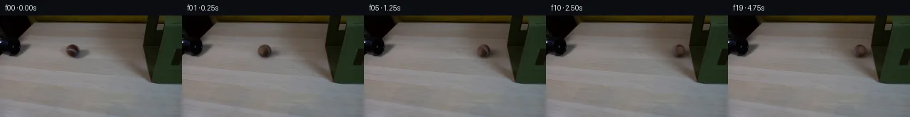
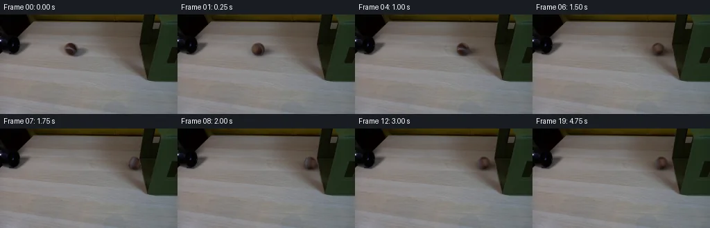
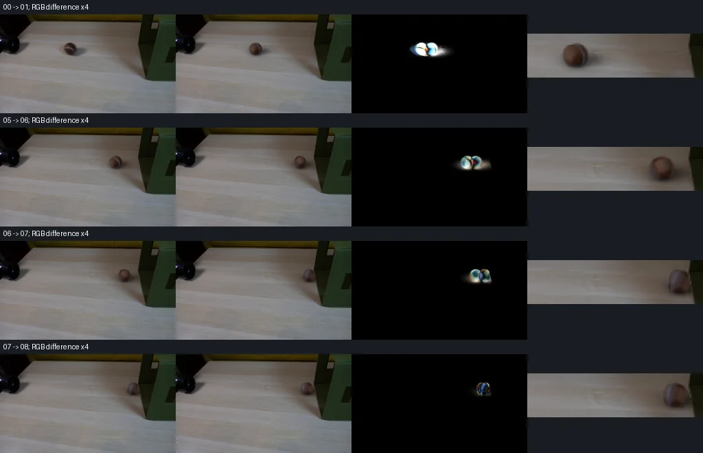

V0 · 初版 · 最终提交
![]()
Observable Generation Trace
把最终像素视频、Harness 冻结的每轮候选、真实工具事件和 Agent 自述放在同一页。可观测证据与模型自述分开标记，避免把“模型说它检查过”误当成真实工具调用。
![首帧]()
Static locked-off single-shot with fixed frame throughout filmed with constant framerate in real-time. The scene shows a realistic scientific demonstration. The scene only contains the described setup and actions. The olive green fabric box is on a light wooden table and a black tube points from the left side to the right side. The brown tennis ball rolls from the left straight out of the black tube and hits the olive green fabric box.
首帧显示在左侧播放器初始画面。Track 权限、隔离和 tensor 一致性来自 run manifest，而不是 METHOD.md。
默认勾选初版和最终版；可选其他版本一起同步播放。仅检查图更新的连续重复快照已合并，回退旧视频仍保留为一次修订。
Observable events
来源：events.jsonl + run manifest
此 Track 禁止读取输出图片。逐轮预览由外部 Harness 自动冻结，只用于事后审计，生成 Agent 当时看不到这些页面。
Frozen candidates
每张图来自该 round 的真实 00 / 01 / 05 / 10 / 19 帧

pixels 73f15ca2665ea23c · code 7975a468f71d85de
--- previous/generate.py
+++ current/generate.py
@@ -0,0 +1,247 @@
+"""Local photographic pixel continuation; no models, engines, or external inputs."""
+from pathlib import Path
+import json
+import hashlib
+
+import numpy as np
+from PIL import Image, ImageDraw
+from scipy.ndimage import gaussian_filter, map_coordinates
+from scipy.special import ndtr
+from scipy.optimize import least_squares
+
+from artifact_io import save
+
+ROOT = Path(__file__).resolve().parent
+SOURCE = np.asarray(Image.open(ROOT / 'first_frame.png').convert('RGB'))
+H, W = SOURCE.shape[:2]
+Y, X = np.mgrid[:H, :W].astype(float)
+CX, CY, RADIUS = 102.4, 49.8, 9.0
+
+
+def reconstruct_table():
+ """Rowwise wood continuation with transplanted local fine grain."""
+ original = SOURCE.astype(float)
+ clean = original.copy()
+ grain = original - gaussian_filter(original, (1.0, 1.6, 0))
+ for y in range(35, 67):
+ left = original[y, 76:83].mean(axis=0)
+ right = original[y, 133:140].mean(axis=0)
+ for x in range(80, 137):
+ fraction = np.clip((x - 79) / 57, 0, 1)
+ clean[y, x] = left * (1 - fraction) + right * fraction
+ clean[y, x] += 0.72 * grain[y, x - 35]
+ # Fully replace the ball and its broad photographic penumbra.
+ body = ndtr((12.5 - np.hypot(X - CX, Y - CY)) / 0.8)
+ shadow = ndtr((1 - np.sqrt(((X - 108) / 28) ** 2
+ + ((Y - 52.4) / 11.4) ** 2)) / 0.09)
+ erase = np.maximum(body, shadow)
+ erase[(X < 80) | (X > 136) | (Y < 35) | (Y > 66)] = 0
+ erase[erase < 0.012] = 0
+ # The broad donor endpoints stay exact, with a gradual blend at the boundary.
+ background = original * (1 - erase[..., None]) + clean * erase[..., None]
+ return background, erase
+
+
+BACKGROUND, ERASE = reconstruct_table()
+
+
+def shadow_field(x, y, parameters):
+ """Fit to the original penumbra outside the opaque ball."""
+ a, dx, dy, sx, sy, ac = parameters
+ broad = a * np.exp(-0.5 * (((X - x - dx) / sx) ** 2
+ + ((Y - y - dy) / sy) ** 2))
+ contact = ac * np.exp(-0.5 * (((X - x - 1.0) / 4.8) ** 2
+ + ((Y - y - 8.0) / 1.8) ** 2))
+ return np.clip(broad + contact, 0, 0.75)
+
+
+DISTANCE = np.hypot(X - CX, Y - CY)
+fit_region = ((DISTANCE > 10.7) & (X > 81) & (X < 134)
+ & (Y > 39) & (Y < 64))
+attenuation = np.clip(1 - SOURCE.mean(axis=2) / BACKGROUND.mean(axis=2), 0, 0.8)
+
+
+def fit_residual(parameters):
+ return (shadow_field(CX, CY, parameters) - attenuation)[fit_region]
+
+
+SHADOW_PARAMETERS = least_squares(
+ fit_residual, [0.4, 8, 3.2, 11, 4.3, 0.25],
+ bounds=([0.08, -2, 0, 5, 1.5, 0.01], [0.65, 15, 8, 18, 8, 0.5]),
+).x
+
+
+def lighting(nx, ny, nz):
+ # Fixed illumination direction, never rotated along with the surface texture.
+ dot = -0.68 * nx - 0.35 * ny + 0.64 * nz
+ return 0.64 + 0.36 * np.maximum(dot, 0)
+
+
+def build_material():
+ """Extract actual photographic brown fabric and pale curved seam."""
+ nx, ny = (X - CX) / RADIUS, (Y - CY) / RADIUS
+ nz = np.sqrt(np.maximum(0, 1 - nx * nx - ny * ny))
+ alpha = ndtr((RADIUS - DISTANCE) / 0.68)
+ under = BACKGROUND * (1 - shadow_field(CX, CY, SHADOW_PARAMETERS)[..., None])
+ foreground = (SOURCE.astype(float) - under * (1 - alpha[..., None]))
+ foreground /= np.maximum(alpha[..., None], 0.15)
… diff truncated; 160 more lines …pixels 73f15ca2665ea23c · code 24cc09d50da8f4a9
--- previous/generate.py
+++ current/generate.py
@@ -2,6 +2,8 @@
from pathlib import Path
import json
import hashlib
+import base64
+import re
import numpy as np
from PIL import Image, ImageDraw
@@ -212,6 +214,38 @@
static = (Y < 34) | (Y > 68) | (X < 78) | (X > 214)
assert np.array_equal(frames[:, static], np.broadcast_to(SOURCE[static], frames[:, static].shape))
assert np.array_equal(frames[12:], np.broadcast_to(frames[12], frames[12:].shape))
+ # Decode the standalone player's actual base64 delta stream independently.
+ html = (ROOT / 'index.html').read_text()
+ data = json.loads(re.search(r'const DATA=(.*?);\nfunction unpack', html, re.S).group(1))
+ current = np.frombuffer(base64.b64decode(data['first']), dtype='<u4').copy()
+ assert np.array_equal(current, packed[:, :, 0].reshape(-1))
+ for i, encoded in enumerate(data['deltas'], 1):
+ packet = np.frombuffer(base64.b64decode(encoded), dtype='<u4')
+ cursor = 0
+ while cursor < len(packet):
+ start, count = map(int, packet[cursor:cursor + 2])
+ cursor += 2
+ current[start:start + count] = packet[cursor:cursor + count]
+ cursor += count
+ assert np.array_equal(current, packed[:, :, i].reshape(-1))
+ # Only the impact frame overlaps the original cloth-side silhouette.
+ cloth = (X >= 200) & (SOURCE[..., 0] < 75) & (Y < 100)
+ assert np.array_equal(frames[:, cloth], np.broadcast_to(SOURCE[cloth], frames[:, cloth].shape))
+ contact_overlaps = []
+ for i in [6, 7, 8]:
+ x, compression = trajectory(i / 4)
+ left, top, _, alpha = render_ball(x, CY, compression, (x - CX) / RADIUS)
+ overlap = alpha * cloth[top:top + 25, left:left + 25]
+ contact_overlaps.append(float(overlap.max()))
+ assert contact_overlaps[0] < 0.01 and contact_overlaps[1] > 0.5
+ assert contact_overlaps[2] < 0.01
+ # Re-render the original pose to measure texture extraction accuracy.
+ left, top, rgb, alpha = render_ball(CX, CY, 0, 0)
+ recreation = BACKGROUND * (1 - shadow_field(CX, CY, SHADOW_PARAMETERS)[..., None])
+ crop = recreation[top:top + 25, left:left + 25]
+ crop[:] = crop * (1 - alpha[..., None]) + rgb
+ core = DISTANCE < 7.5
+ recreation_error = float(np.abs(recreation[core] - SOURCE[core]).mean())
steps = []
for i in range(1, 20):
difference = np.abs(frames[i].astype(int) - frames[i - 1].astype(int))
@@ -227,6 +261,9 @@
'tensor_dtype': str(packed.dtype), 'fps': 4, 'duration_seconds': 5,
'first_frame_exact': True, 'all_png_tensor_matches': True,
'static_region_exact': True, 'settled_frames_exact': True,
+ 'cloth_pixels_exact': True, 'html_embedded_frames_match_tensor': True,
+ 'impact_alpha_overlap_frames_06_07_08': contact_overlaps,
+ 'zero_angle_core_rgb_mae': recreation_error,
'shadow_fit_parameters': SHADOW_PARAMETERS.tolist(),
'shadow_fit_rmse': float(np.sqrt(np.mean(fit_residual(SHADOW_PARAMETERS) ** 2))),
'source_sha256': hashlib.sha256((ROOT / 'first_frame.png').read_bytes()).hexdigest(),pixels 73f15ca2665ea23c · code 3b6ae27875ade93a
--- previous/generate.py
+++ current/generate.py
@@ -4,6 +4,7 @@
import hashlib
import base64
import re
+import shutil
import numpy as np
from PIL import Image, ImageDraw
@@ -280,5 +281,7 @@
if __name__ == '__main__':
sequence, events = create_frames()
save(sequence, ROOT)
+ # Preserve the input file itself as well as its exact decoded RGB values.
+ shutil.copyfile(ROOT / 'first_frame.png', ROOT / 'frames' / '00.png')
diagnostics(sequence)
verify(sequence, events)Final visual checks
Harness 保存的最终产物


Agent claims
以下文字由生成 Agent 撰写，不等同于工具证据
The supplied first frame is a 256 × 144 RGB photograph. The camera is fixed and looks obliquely down at a pale wooden tabletop. A black tube enters from the left, with its visible mouth near (18, 43). A small brown tennis ball is already beyond the tube, centered approximately at (102, 50), with an apparent radius of 8–9 pixels. Its underside touches the tabletop near y = 58. An olive green fabric box occupies the right side, with its left boundary near x = 203–207 at ball height. The box, tube, tabletop, and background remain stationary.
Numeric RGB inspection refines the ball center to (102.4, 49.8), with radius approximately 9.0 pixels. Its soft shadow extends roughly from x = 84 to 128 and y = 44 to 61. The fabric boundary starts at x = 201 near y = 44 and x = 204 near y = 56. The ball travels horizontally across the tabletop along the direction from the tube toward the box. The contact center is therefore approximately (193.3, 49.8), allowing for the inclined fabric boundary. It rolls into the fabric side, slows during contact, rebounds a short distance, and settles near the box. The fabric box is substantially larger than the ball and stays in place. Shadows remain consistent with the original lighting.
At 4 fps, frame samples are t = 0.00 through 4.75 seconds; the 20-frame playback lasts 5 seconds. Coordinates below are preliminary image-space ball centers. The exact first image is retained as frame 00.
| Frame | Time (s) | Approximate center x | Event |
|---|---|---|---|
| 00 | 0.00 | 102 | Original photograph; ball is beyond tube. |
| 01 | 0.25 | 116 | Forward rolling. |
| 02 | 0.50 | 129 | Forward rolling. |
| 03 | 0.75 | 142 | Forward rolling. |
| 04 | 1.00 | 155 | Forward rolling. |
| 05 | 1.25 | 168 | Forward rolling. |
| 06 | 1.50 | 181 | Approaching fabric side. |
| 07 | 1.75 | 193 | Impact; small ball compression. |
| 08 | 2.00 | 190 | Modest rebound. |
| 09 | 2.25 | 188 | Rolling slowly away from contact. |
| 10 | 2.50 | 186 | Rebound slows. |
| 11 | 2.75 | 185 | Friction dissipates motion. |
| 12 | 3.00 | 185 | Ball comes to rest. |
| 13 | 3.25 | 185 | Settled ball. |
| 14 | 3.50 | 185 | Settled ball. |
| 15 | 3.75 | 185 | Settled ball. |
| 16 | 4.00 | 185 | Settled ball. |
| 17 | 4.25 | 185 | Settled ball. |
| 18 | 4.50 | 185 | Settled ball. |
| 19 | 4.75 | 185 | Settled ball. |
Use only the supplied scene and local Python pixel operations. Reconstruct the wood beneath the moving ball, preserve its photographic appearance, and animate rolling with mathematical transforms. Inspect later images only with code and numeric checks. Produce the tensor, frame PNGs, contact/transition diagnostic images, player, generator, and method documentation required by GENERATION_RULES.md. No later image is opened with an image viewing tool.
This is a local Python pixel continuation of the supplied photograph. It uses NumPy, SciPy, and Pillow, with the supplied artifact_io.py output helper. No external images, masks, models, rendering engines, network services, or subagents were used. The attached initial frame provided the visual scene observation. Generated frames and diagnostic sheets were inspected only through Python and numeric checks; no generated image was opened with a Read/View tool, and no visual review is claimed.
The scene is kept as a fixed photographic background. The original ball is centered at approximately (102.4, 49.8) and has a 9-pixel radius. Its original position and soft shadow are removed by continuing wood colors between nearby unobstructed samples in each image row and transplanting fine wood grain from a nearby part of the same photograph. A feathered mask blends that reconstruction into the exact original table. The original tube, cloth box, background, and camera framing stay fixed.
The ball material comes from the actual source pixels. A fitted shadow model and an antialiased spherical silhouette estimate the photographic foreground colors. Dividing those colors by an analytic fixed lighting function gives an approximate surface material. A spherical texture transform rotates it around the rolling axis by horizontal travel divided by radius. The unseen hemisphere repeats the available photographic material using the same projected source coordinates; it is an approximation of hidden surface texture, rather than newly observed data. Near the uncertain silhouette, material colors extend from the nearest reliable radial sample. A 4× pixel raster and a soft silhouette reproduce subpixel motion and the source's optical softness. Lighting stays fixed while the material rotates.
The cast shadow uses two elliptical Gaussian attenuation fields, fitted numerically to source pixels outside the opaque ball. The fitted shadow moves with the ball and is composited onto the original tabletop lighting. Original fabric-side pixels cover the ball's small overlap at impact and occlude its cast shadow. The box remains stationary.
The 20 samples are at a constant 4 fps, with times 0.00–4.75 seconds and a playback duration of 5 seconds. Frame 00 is copied exactly from first_frame.png. The ball begins with an image-space velocity of 54 pixels per second and a small deceleration. It reaches the box at 1.75 seconds, with its center at x = 193.30. The impact frame compresses its horizontal radius by 3.5%. A modest rebound loses speed under constant friction and ends at x = 185.175 by 3.00 seconds. Frames 12–19 hold that resting pose. The larger fabric box does not visibly move under this small impact.
Run python generate.py from this workspace. The script regenerates and checks all outputs:
pixels.npz: pixels is a uint32 tensor with shape (144, 256, 20), storing each RGB color as 0xRRGGBB.frames/00.png through frames/19.png: 20 RGB images at 256 × 144.inspection.png: a contact sheet including the original, motion, impact, rebound, and resting poses.transition_check.png: selected adjacent frame pairs, magnified ball-path crops, and amplified RGB differences.index.html: a self-contained player with embedded lossless frame deltas and a 250 ms playback cadence.verification.json: scene geometry, trajectory, numeric image checks, and frame-difference measurements.OBSERVATION.md was written before generation code and records the measurements and frame plan.
The generator asserts exact equality between frame 00 and the input RGB image, checks every PNG against the packed tensor, and independently decodes the HTML player's base64 delta stream to compare all 20 frames. It checks that the tube, fabric box, background, and pixels outside the tabletop motion region are unchanged. Numeric silhouette overlap is checked before, during, and after impact. The final eight frames must be identical, confirming that the ball settles.
The original-pose sphere reconstruction has an interior mean absolute RGB error of approximately 1.73 levels on a 0–255 scale. The shadow fit has attenuation RMSE approximately 0.0447. These checks support material extraction and temporal consistency; they do not constitute visual review. The hidden ball texture and newly exposed tabletop are reconstructed from local pixels, and the short collision response is an analytic approximation. The unchanged original frame remains the exact starting image.